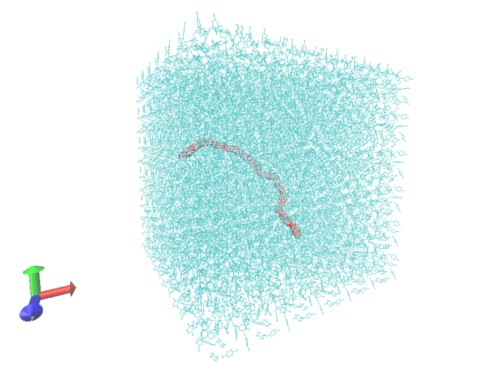

Tutorial for a Polyethylene Chain in a Xylene Solution#
With DL_FIELD, it is possible to create solute/solvent systems via the Solvation feature. The following tutorial will make use of this to construct a polyethylene (PE) chain in a 1,4-dimethylbenzene (p-xylene) solvent. An xyz file of an equilibrated polyethylene chain can be found here.
Contents#
Solvation feature#
The DL_FIELD Solvation feature of the CONTROL file adds solvent to a solute configuration provided by the user via pre-equilibrated solvent templates located in the solvent/ directory. The CONTROL file command by default is:
none 1.9 default * Solvate model? none or specify solvent (see below), distance criteria and FF.
which takes the following options:
- Solvent#
Type of solvent (see solvent/ directory). If set to none, DL_FIELD will skip the solvation step.
- Cut-off#
Minimum distance solvent molecules are from the solute (Å).
- Forcefield#
FF scheme used for the solvent. If set to default, the FF will be set to the same scheme as specified in the third CONTROL file option. If set to a different FF scheme, DL_FIELD will switch to a multiple potential scheme scenario. See the DL_FIELD manual for further details.
Note
The amount of solvent inserted depends on the size of the simulation box specified in the CONTROL file. Preferably, this should be a multiple of 20 Å to avoid truncating the solvent template box at the end of the simulation box.
We will construct a \(12 \text{nm} \times 12 \text{nm} \times 12 \text{nm}\) box of a polyethylene chain solvated in p-xylene with the OPLS/2005 FF. We need to specify the following lines in the CONTROL file:
Control file title. For DL_FIELD 4.10
...
opls2005 * Type of force field required (see DL_FIELD manual for list)
1 * Periodic condition ? 0=no, other number = type of box (see DL_FIELD manual)
120.0 0.0 0.0 * Cell vector a (x, y, z)
0.0 120.0 0.0 * Cell vector b (x, y, z)
0.0 0.0 120.0 * Cell vector c (x, y, z)
...
xylene_p 1.9 default * Solvate model? none or specify solvent (see below), distance criteria and FF.
...
The Solvation feature is only applicable to cubic boxes, which must be accounted for when specifying the cell vectors. Additonally, we set the periodic boundary conditions to 1, which is specific to this geometry. An example set of CONTROL file options is provided below:
Control file title. For DL_FIELD 4.10
1 * Construct DL_POLY output files
gromacs * Seconday output files (gromacs, chemshell or none).
opls2005 * Type of force field require (see list below for choices).
kcal/mol * Energy unit: kcal/mol, kJ/mol, eV, or K.
normal * Conversion criteria (strict, normal, loose)
1 * Bond type (0=default, 1=harmonic , 2=Morse)
1 * Angle type (0=default, 1=harmonic, 2=harmonic cos)
none * Include user-defined information. Put 'none' or a .udff filename
1 * Verbosity mode: 1 = on, 0 = off
tutorial-confs/PE.xyz * Configuration file.
none * Output file in PDB. Put 'none' if not needed.
0 0.1 mol/dm^3 15.0 * Solution Maker: on/off, density, unit, cutoff)
0 * Optimise FIELD output size, if possible? 1=yes 0=no
2 * Atom display: 1 = DL_FIELD format. 2 = Standard format
2 * Vdw display format: 1 = 12-6 format 2 = LJ format
default * Epsilon mixing rule (organic FF only) : default, or 1 = geometric, 2 = arithmatic
default * Sigma mixing rule (organic FF only) : default, or 1 = geometric, 2 = arithmatic
1 * Epsilon mixing rule (inorganic FF only) : 1 = geometric 2 = arithmatic
2 * Sigma mixing rule (inorganic FF only) : 1 = geometric 2 = arithmatic
1 * Epsilon mixing rule (BETWEEN different FF) : 1 = geometric 2 = arithmatic
2 * Sigma mixing rule (BETWEEN different FF): 1 = geometric 2 = arithmatic
0 * Display additional info. for protein 1=Yes 0=No
0 * Freeze atoms? 1 = Yes (see below) 0 = No
0 * Tether atoms? 1 = Yes (see below) 0 = No
0 * Constrain bonds? 1 = Yes (see below) 0 = No
0 * Apply rigid body? 1 = Yes (see below) 0 = No
1 * Periodic condition ? 0=no, other number = type of box (see below)
120.0 0.0 0.0 * Cell vector a (x, y, z)
0.0 120.0 0.0 * Cell vector b (x, y, z)
0.0 0.0 120.0 * Cell vector c (x, y, z)
default * 1-4 scaling for coulombic (put default or x for scaling=x)
default * 1-4 scaling for vdw (put default or x for scaling=x)
0 300.0 * Include velocity? 1=yes, 0=no and scaling temperature.
1 * Position solute at origin? 1 = yes, 0=no
xylene_p 1.9 default * Solvate model? none or specify solvent (see below), distance criteria and FF.
0 10.0 * Add counter ions? 1=yes, 0=no, minimum distance from solute
0 * Not use
0 * Not use
0 * Not use
... (rest of default CONTROL file)
Visualisation#
Running DL_FIELD with
$ ./dl_field
leaves us with a set of output files, including a configuration file we can visualise. Let’s check the output is sensible:
{kind=link}
The visualisation shows the polyethylene chain solvated with p-xylene in a cubic simulation box. DL_FIELD offers a wide variety of solvents, please see the reference manual for full details.